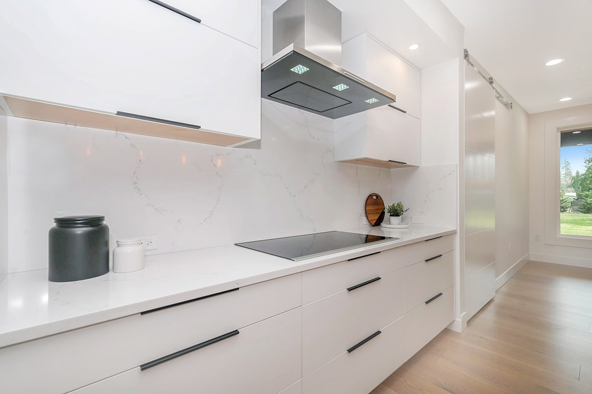

A kitchen renovation in Geelong typically runs 4-8 weeks on site once work begins, with 2-3 months of design and lead-time planning beforehand. Custom cabinetry usually takes around 6 weeks to build, and stone benchtops need a separate 1-3 week template-to-install window. Cosmetic refreshes start from around $8,500, while premium and custom fitouts typically begin from $45,000+. Builders taking on work over $10,000 must be registered under the Victorian Building Act 1993.
Homeowners across Newtown, Belmont and Highton weighing up a kitchen renovation in Geelong usually need answers on three things first: what actually drives the price, how long the trades take once they're booked, and which licenses to check before signing anything. See Kitchen Renovation Geelong for the current service details.
Kitchen Renovation Geelong Explained
A renovation touches layout design, custom cabinetry, benchtops, splashback tiling, and plumbing and electrical work before a fitout is finished. In older Newtown weatherboards, a common brief is opening up a boxed-in galley kitchen without moving load-bearing walls. In Belmont and Highton, where blocks and floor plans run larger, the more common ask is an island bench that ties the kitchen into open-plan living.
Design is typically scoped into the build rather than billed separately, and 3D visuals are usually produced before cabinetry is cut, so layout changes can still be made cheaply.
For homeowners researching this locally, Kitchen Renovation Geelong sets out the full scope, from design through to install, and where fixed costs and lead times sit within it.
What Actually Moves the Price
Cost splits into two bands, and what happens inside each band matters more than the headline figure. A cosmetic or small refresh keeps the existing footprint and updates cabinetry, benchtop, splashback and appliances, from around $8,500 depending on scope and finishes. A premium or custom fitout typically starts from $45,000+.
- Cabinetry: flat pack keeps a budget refresh affordable; custom cabinetry with soft close drawers, tall pantry pull-outs and integrated appliance housings sits at the higher end
- Benchtops: laminate or timber for a refresh, engineered or natural stone for a premium fitout
- Splashbacks: tile is the cheaper option, glass and stone push the fitout toward the premium band
- Appliances: freestanding units suit a refresh, integrated appliances are a premium-fitout feature
A firm figure only comes once a specialist has seen the space and confirmed these choices, since finish level moves price more than floor area does.
How Long a Renovation Actually Takes
Once work begins on site, a standard renovation typically takes 4-8 weeks. That follows 2-3 months of design and lead-time planning beforehand, covering layout sign-off, material selection and trade scheduling.
Custom cabinetry has its own build time, usually around 6 weeks from final design approval. Stone benchtops need a separate template-to-install window of 1-3 weeks once cabinetry is in place and can be measured. These lead times run in sequence, not in parallel, which is why planning needs to start well before demolition.
Anyone weighing a full rebuild against joinery alone should also check custom cabinetry specialists in Geelong, since cabinetry lead time is often what sets the whole project schedule.
Registration and Licensing to Check For
Under the Victorian Building Act 1993, domestic building work over $10,000 must be carried out by a registered building practitioner. Most full renovations cross that threshold once cabinetry, benchtops and installation are combined, so confirming registration before signing is a basic first check.
- Builders: registered with the Victorian Building Authority / Building and Plumbing Commission for domestic building work over $10,000
- Plumbers: registered with the VBA/BPC
- Electricians: licensed with Energy Safe Victoria
Industry membership with the Housing Industry Association or Master Builders Victoria is a further, non-mandatory signal of an established operator. None of these checks replace reading the written contract.
Older Stock vs Newer Builds Across the Barwon Region
Newtown and central Geelong carry a lot of pre-1960s housing stock, where original wiring and plumbing often can't handle a modern layout without an upgrade quoted separately from the renovation itself. Belmont and Highton have more 1970s-90s brick veneer homes, generally with easier access for cabinetry delivery and fewer structural surprises. Ocean Grove sits somewhere between the two, with a mix of older beach shacks and newer builds on larger blocks.
A written quote should state whether electrical or plumbing upgrades are included or separate, since that single line item explains most price differences between quotes for what looks like the same job on paper.
- Confirm scope and budget range. Decide whether the project is a cosmetic refresh or a full custom fitout before requesting quotes.
- Share project details. Provide your suburb, kitchen size and rough vision so a matched specialist can scope the job accurately.
- Get matched with a vetted local specialist. A Geelong-area renovator, registered builder or cabinetmaker is matched to the project based on location and scope.
- Compare itemised quotes. Review scope, materials, registration status and timeline before choosing a specialist.
| Renovation type | Typical scope | Starting cost signal |
|---|---|---|
| Small or budget refresh | Cabinetry refresh, new benchtop, splashback, appliances, existing footprint kept | From around $8,500 |
| Luxury or custom fitout | Premium stone, integrated appliances, custom joinery, architectural lighting | Typically from $45,000+ |
Common questions
How long does a kitchen renovation take in Geelong? Once work starts on site it typically takes 4-8 weeks, though most projects also need 2-3 months of design and lead-time planning beforehand. Custom cabinetry and stone benchtops each add their own lead time on top of the on-site window.
Do I need a registered builder for a kitchen renovation? Yes, if the domestic building work is valued over $10,000, the Victorian Building Act 1993 requires it be carried out by a registered building practitioner. Most full renovations cross that threshold once cabinetry, benchtops and installation are combined.
What drives the cost within each budget band? Cabinetry choice (flat pack versus custom joinery), benchtop material (laminate versus stone), splashback material and whether appliances are freestanding or integrated all move the price more than floor area does.
Can I renovate a kitchen on a small budget? A small renovation that keeps the existing footprint and focuses on cabinetry, benchtop and appliance refresh is generally the more affordable path, from around $8,500 depending on scope and finishes.
This guide covers renovation scope, cost drivers, timelines and licensing requirements for kitchen renovations across Geelong and the Barwon region.